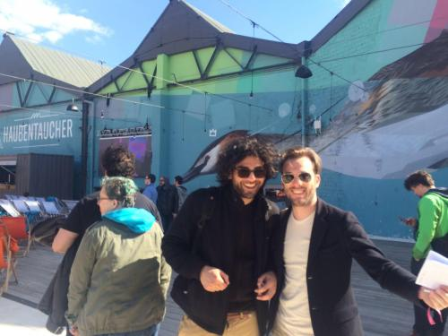

Enter the Writers
#3 It's not a fantasy, it's a goal
By Dirk Vis
Technology that we don’t understand, or that is new, can appear magical to us. But it isn’t, actually. In my previous blog I went in search of people who created their own tools to make their art.
I met the same kind of people face to face at A MAZE 2016 in Berlin. A MAZE is a gaming conference, a festival and an exhibition for indie game developers from around the world. What unites them is that they make computer games primarily for fun. I felt an atmosphere there that I would like to have around me at all times. People knew each other, challenged each other or marvelled at each other's’ work, and understood what projects the other was busy with.
Thorsten S. Wiedemann, the director, is the uncrowned king of the festival and someone who is widely spoken about and admired there. When I asked him for his motives for the festival, he stated that he saw the event as a gathering of like-minded authors, something that I sometimes - but not hardly enough - experience at literary festivals. The comparison went further. Thorsten likened computer games and related small-scale multimedia productions with poetry. Adopting his point of view I looked around.
We walked past the work that won the A MAZE 2016 award, Diorama #3 from the Dutchman Daniël Ernst (for sale at Steam). For this work (in my opinion it can be considered as an artwork as well as a game) you need to wear a VR headset. You are immediately placed in a dark world where it rains. You notice a tollhouse. You can go through the house, walk a little bit up and down, twitch the curtains in the house, and that's retty much it. Nothing more.
But you feel in your bones that this piece works. If you don’t watch out you can walk through a wall of the house and you realise that it is an intermediate world, one that you can only view. Other VR works use impermeable, impassable walls in an attempt to make the virtual world real as possible, but here the idea of virtuality is emphasised, and that has an immediate effect. Is this the place where I died without knowing it? Is this a place where I have experienced something tragic, and where I always return to in a dream?
The strength of Ernst’s work is in its apparent simplicity; there are no complicated interactions, no goals to reach. Only a concentration for what there is; and that is something that you feel through your whole body. At one moment all the important moments in my life ran through my head; and whether they turn out triumphantly or tragically, or both, I can’t yet say. Under the bridge on the outskirts of the village. In the dunes, basking in the sun. It's like I'm looking from a distance at my own history.
In fact Diorama # 3 is a contemporary version of the story Le Passe-Muraille from 20th-century writer, Marcel Aymé. In it the main character can pass through walls, but it brings more stress than benefits. Aymé’s stories have the same physical effect on me as the poems of Emily Dickinson, which sometimes make you feel more like a spirit than a human. Ernst's work also has something very cinematic about it; a camera that can move through a wall seems to me to be an image that would have an immediate effect in a film.
I spoke with Daniël Ernst. He calls those who look at his work a visitor, not a player, and he’s right, that’s how it feels. Diorama # 3 is a way to do something that could not be done before. Walking through walls, you feel like a ghost. Ernst told me he makes his work by putting on the VR headset, and drawing in the virtual space. I think that's crucial. Other game makers first draw out their entire virtual reality on the computer and go into the virtual world when they are ready. But whilst Ernst is engaged in creating his own virtual space, he is using his artwork as a tool. Perhaps that's the thing that enables him to get you to experience something extraordinary. The technique is not the magic element in Ernst’s work. He uses his technique to create an even greater feeling of mystery.
While I had his headset on, I wondered what would happen if I met someone else in this in-between world. I wondered what new things have been made more tangible by games and apps, things I've never felt before. Are there people who have used their tools to create interactions for situations we’ve not yet experienced? Is it possible to visit someone in his or her dream? I hope to find an answer to these questions next week.
 In conversation with indie game developer Niki Smit
In conversation with indie game developer Niki Smit
With fellow blogger Kaweh Modiri
Back